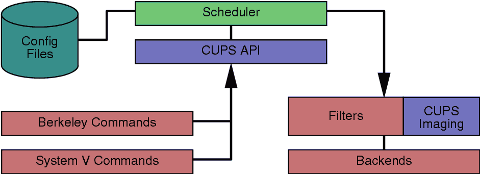

An Overview of the
Common UNIX Printing System,
Version 1.2
July 3, 2004
Michael Sweet, Easy Software Products
Copyright 1998-2004, All Rights Reserved.
|
An Overview of the
|
New Outline:
New Features:
1. Networking
a. IPv6
i. Next-generation Internet support
ii. ????
b. Domain sockets
i. Enhanced performance under load for local clients.
ii. Authentication without passwords on platforms that support it.
c. CUPS browsing updates
i. "Delete" bit for printers
ii. "lease-time" for printers so that clients and servers don't need
the same browse timeout/interval settings
iii. Additional attributes/default options for network-wide defaults
iv. Network default printer
v. Ability to control send and receive protocols independently
d. Rendevous support
e. LDAP support
f. Per-printer sharing
2. IPP Support
a. Notifications
b. Document object
c. Send-URI, Print-URI
d. Other stuff?
e. Add/delete device operations
3. Scheduler
a. Backchannel support
b. Port monitor support
c. Device monitor
i. Dynamic device discovery/management
d. All errors include a localized message.
e. Fine-grain policies, server default + per-printer
f. UTF-8 throughout
4. Web Interface
a. cupsd.conf interface
b. Move-Job
c. Export printers to windows
d. Per-printer sharing controls
e. Per-printer access control lists
f. Policy stuff
5. I18N
a. Support for ... character sets
b. All commands and messages are localized
c. Character set transcoding
d. ... , and Japanese localizations
6. Drivers
a. New HP-RTL driver.
This whitepaper describes the Common UNIX Printing SystemTM (CUPSTM), a portable and extensible printing system for Linux®, MacOS® X, UNIX®. CUPS is developed by Easy Software Products, a software firm located in Hollywood, Maryland that has been selling commercial software for UNIX since 1993 through more than 40 distributors serving over 80 countries worldwide.
CUPS is used by Apple to provide printing on MacOS X and is the defacto-standard for Linux. Additional information on CUPS is available on the World Wide Web at the following URL:
http://www.cups.org/
Printing within UNIX has historically been done using one of two printing systems - the Berkeley Line Printer Daemon (LPD) [RFC1179] and the AT&T Line Printer system. These printing systems were designed in the 70's for printing text to line printers; vendors have since added varying levels of support for other types of printers.
Replacements for these printing systems have emerged [LPRng, Palladin, PLP], however none of the replacements change the fundamental capabilities of these systems.
Over the years several attempts at developing a standard printing interface have been made, including the draft POSIX Printing standard developed by the Institute of Electrical and Electronics Engineers, Inc. (IEEE) [IEEE-1387.4] and Internet Printing Protocol (IPP) developed by the Internet Engineering Task Force (IETF) through the Printer Working Group (PWG) [IETF-IPP]. The POSIX printing standard defines a common set of command-line tools as well as a C interface for printer administration and print jobs, but has been shelved by the IEEE.
The Internet Printing Protocol defines extensions to the HyperText Transport Protocol 1.1 [RFC2616] to provide support for remote printing services. IPP/1.1 was accepted by the IETF as a proposed standard in ??? of ???. Unlike POSIX Printing, IPP enjoys widespread industry support and has become the standard network printing solution for all operating systems.
CUPS uses IPP/1.1 to provide a complete, modern printing system for UNIX that can be extended to support new printers, devices, and protocols while providing compatibility with existing UNIX applications. CUPS is free software provided under the terms of the GNU General Public License and GNU Library General Public License.
The first production release of CUPS (based on IPP/1.0) was released in October of 1999. Version 1.1 of CUPS was released in August of 2002 ???? and added support for IPP/1.1.
CUPS 1.2 is based on IPP/1.1 and adds many of the functional enhancements that have been requested by our users. As with CUPS 1.1, CUPS 1.2 will be followed by patch releases that address any problems found with the software. New features will be put in the 1.3 release to follow.
Like most printing systems, CUPS is designed around a central print scheduling process that dispatches print jobs, processes administrative commands, provides printer status information to local and remote programs, and informs users as needed. Figure 1 shows the basic organization of CUPS.

Figure 1 - CUPS Block Diagram
The scheduler is a HTTP/1.1 server application that handles HTTP requests. Besides handling printer requests via IPP POST requests, the scheduler also acts as a full-featured web server for documentation, status monitoring, and administration.
The scheduler also manages a list of available printers on the LAN and dispatches print jobs as needed using the appropriate filters and backends.
The configuration files consist of:
The HTTP server configuration file is purposely similar to the Apache server configuration file and defines all of the access control properties for the server.
The printer and class definition files list the available printer queues and classes. Printer classes are collections of printers. Jobs sent to a class are forwarded to the first available printer in the class, round-robin fashion.
The MIME type files list the supported MIME types (text/plain, application/postscript, etc.) and "magic' rules for automatically detecting the format of a file. These are used by the HTTP server to determine the Content-Type field for GET and HEAD requests and by the IPP request handler to determine the file type when a Print-Job or Send-File request is received with a document-format of application/octet-stream.
The MIME conversion rule files list the available filters. The filters are used when a job is dispatched so that an application can send a convenient file format to the printing system which then converts the document into a printable format as needed. Each filter has a relative cost associated with it, and the filtering algorithm chooses the set of filters that will convert the file to the needed format with the lowest total "cost".
The PPD files describe the capabilities of all printers, not just PostScript printers. There is one PPD file for each printer. PPD files for non-PostScript printers define additional filters through cupsFilter attributes to support printer drivers.
The CUPS API contains CUPS-specific convenience functions for queuing print jobs, getting printer information, accessing resources via HTTP and IPP, and manipulating PPD files. Unlike the rest of CUPS, the CUPS API is provided under the terms of the GNU LGPL so it may be used by non-GPL applications.
CUPS provides the System V and Berkeley command-line interfaces for submitting jobs and checking the printer status. The lpstat and lpc status commands also show network printers ("printer@server") when printer browsing is enabled.
The System V administation commands are supplied for managing printers and classes. The Berkeley printer administration tool (lpc) is only supported in a "read-only' mode to check the current status of the printer queues and scheduler.
A filter program reads from the standard input or from a file if a filename is supplied. All filters must support a common set of options including printer name, job ID, username, job title, number of copies, and job options. All output is sent to the standard output.
Filters are provided for many file formats and include image file and PostScript raster filters that support non-PostScript printers. Multiple filters are run in parallel to produce the required output format.
The PostScript raster filter is based on the ESP Ghostscript core. Instead of using the Ghostscript printer drivers, the CUPS filter uses a generic CUPS raster printer driver and CUPS-compliant front-end to support any kind of raster printer. This allows the same printer driver filter to be used for printing raster data from any filter.
Talk about Apple's use of CUPS...
The CUPS Imaging library provides functions for managing large images, doing colorspace conversion and color management, scaling images for printing, and managing raster page streams. It is used by the CUPS image file filters, the PostScript RIP, and all raster printers drivers.
A backend program is a special filter that sends print data to a device or network connection. Backends for parallel, serial, USB, LPD, IPP, and AppSocket (JetDirect) connections are provided in CUPS 1.2.
SAMBA version 2.0.6 and higher includes a SMB backend (smbspool(1)) that can be used for printing to Windows.
Traditionally, network printing has been one of the hardest things to get working under UNIX. One reason is because each vendor added their own extensions to the LPD protocol (the previous standard for network printing), making cross-platform printing difficult if not impossible.
Another reason is that you have to administer every network printer on every client machine. In some cases you can "clone' the printer configuration from a "master' client to each of the others, but even that can be time-consuming and error-prone. Something better is needed.
CUPS provides "printer browsing", which allows clients to automatically see and use printers from any server on a LAN. This means that you only need to configure the server and the clients will automatically see the printers and classes on it.
In addition, CUPS can automatically merge multiple identical network printers into "implicit classes". This allows clients to send jobs to the implicit class and have them print on the first available printer or server. In addition, failsafe and load-balancing functions are enabled simply by defining the same printer on multiple servers!
CUPS 1.2 includes many new features and capabilities:
CUPS 1.2 implements a new backend interface for retrieving a list of available devices for CUPS clients. This allows administration interfaces to query the CUPS scheduler for a list of available devices, automatically configure printers if the device identification information is available, and present the user with a list of available devices rather than relying on the user to know what devices are configured on the system.
The new release also includes a backend for USB printers under *BSD and Linux. Support for USB under Solaris 8 will be provided in a subsequent patch release.
CUPS 1.2 includes support for banner pages at the beginning and end of a job. Banner pages may be of any file format and support variable substitution for job titles, usernames, etc. Default banner pages are associated with each printer and can be overridden with command-line options by the user.
Digest authentication provides a more secure method of authenticating access to the printing system. Unlike Basic authentication, Digest authentication does not send passwords "in the clear' so it is more difficult to gain unauthorized access to your system.
CUPS 1.2 implements Digest authentication using a special MD5 password file instead of the UNIX password file. This file is managed using the new lppasswd command.
CUPS 1.2 adds new directory service ("printer browsing") features to make using CUPS on large LANs and WANs easier. You can now poll a remote server for printer information and relay it to the LAN as well as restrict what printer information is processed (e.g. to "hide" servers, domains, or networks that you don't want to see.)
CUPS 1.2 now uses a directory structure that complies with the Filesystem Hierarchy Standard (FHS), version 2.0. This should make integration into existing Linux and *BSD distributions a lot easier.
The CUPS 1.2 documentation has gone through many revisions, including a completely rewritten administrators manual, a new programmers manual, and an IPP implementation reference manual.
CUPS 1.2 includes drivers for EPSON dot-matrix and inkjet printers. As with the HP PCL drivers, the EPSON drivers don't necessarily provide the best possible output for each printer but should provide adequate printing quality for general day-to-day printing.
CUPS 1.2 includes new image, PostScript, PDF, and text filters. The image filters have been upgraded to support Windows BMP and Alias PIX files.
The PostScript filter is now based off ESP Ghostscript. The new filter provides much better performance with higher-resolution printers and supports all Level 3 PostScript language features.
The new PDF filter is based off the excellent Xpdf software from Derek Noonburg and supports automatic page scaling. The new filter is a faster, smaller, more reliable replacement for the GNU Ghostscript PDF filtering that was used in CUPS 1.0.
The new text filter now supports bidirectional text and can embed fonts as needed.
Probably the least visible portion of CUPS is the IPP support. CUPS 1.1 implements all of the required IPP/1.1 operations and attributes and most of the optional ones. The optional Create-Job and Send-File operations are now implemented, allowing for better System V printing system compatibility (one job ID per lp command) and support for banner pages.
CUPS 1.2 supports job persistence. This means that jobs are preserved even after a reboot, a feature that was sorely missing from CUPS 1.0.
In addition, CUPS 1.2 allows you to keep job information after the job has printed. The basic post-job persistence mode provides a job history (number of pages printed, time job was printed, etc.) but does not preserve the actual job files. This can be changed to discard all information after a job is printed or keep the job files after printing so you can reprint a job at some later time.
By popular request, CUPS 1.2 supports LPD-based clients using a new mini-daemon that handles LPD requests and passes them on to the main server.
CUPS 1.2 includes support for user-defined printers and options via a new lpoptions command. User-defined printers are special instances of the available printers (e.g. "printer/instance" or "printer@server/instance") that can have their own default options such as media size, resolution, and so forth. The lpoptions command can also be used to set a different default printer queue.
CUPS 1.0 provided a simple class, job, and printer monitoring interface for web browsers. CUPS 1.2 replaces this interface with an enhanced administration interface that allows you to add, modify, delete, configure, and control classes, jobs, and printers.
A lot has happened since CUPS 1.0 came out, and many software packages are supporting CUPS. We have contributed code to the SAMBA team to support CUPS, and parts of that are already available in SAMBA 2.0.6 and 2.0.7. With any luck the final pieces that provide a complete integration with SAMBA will be available in the next release of SAMBA.
Two graphical interfaces have appeared on the scene that use CUPS as well. The KUPS project provides a KDE-based interface for CUPS and can be found at:
http://kups.sourceforge.net
The X Printing Panel (XPP) project provides a graphical printing panel for CUPS and can be found at:
http://www.phy.uni-bayreuth.de/till/xpp/
Numerous other filters, drivers, tutorials, etc. have been made available on the CUPS Links web page, available at:
http://www.cups.org/links.php
Finally, our own ESP Print Pro software uses CUPS to provide drivers for thousands of printers and can be found at:
http://www.easysw.com/printpro
One of our goals has always been to get as many UNIX/Linux distributions using CUPS as possible. Debian is currently providing CUPS as part of its stable distribution, and many other distributions are considering it in their next releases.
The Common UNIX Printing System provides a modern printing interface for UNIX applications that is both flexible and user-friendly. The software provides System V and Berkeley compatible command-line interfaces to ensure compatibility with existing applications. CUPS 1.2 adds many new features that make it an even better choice for printing under UNIX.
For more information on CUPS please contact us at:
Attn: CUPS Information
Easy Software Products
44141 Airport View Drive Suite 204
Hollywood, Maryland 20636-3142 USA
+1.301.373.9600
cups-info@cups.org
The Common UNIX Printing System, CUPS, and the CUPS logo are the trademark property of Easy Software Products. All other trademarks are the property of their respective owners.